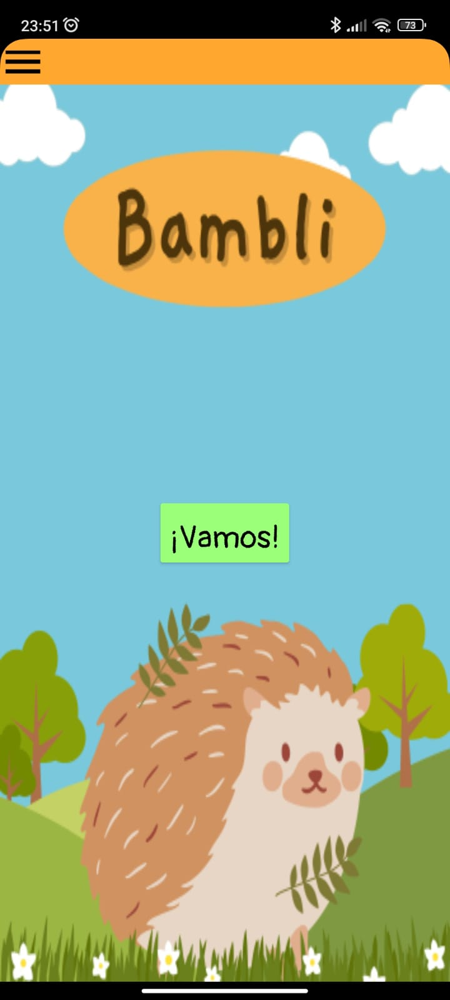
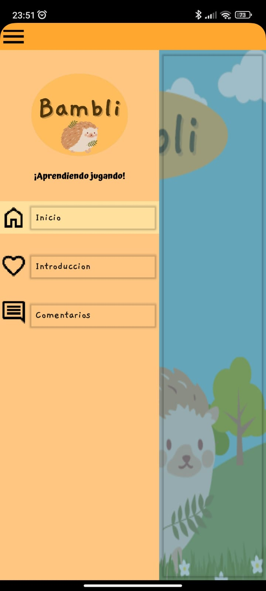
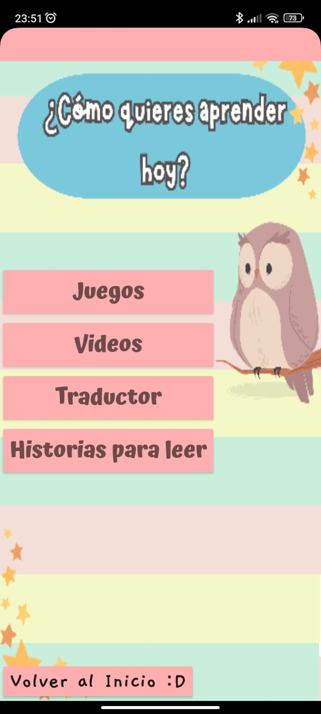
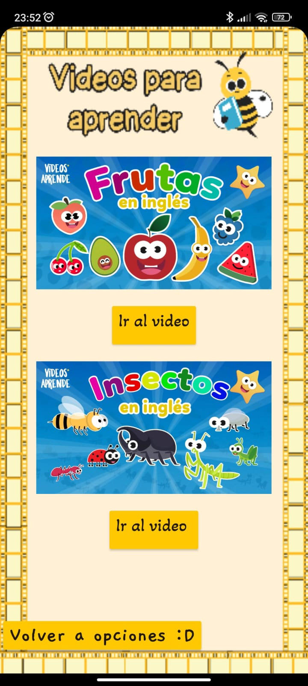
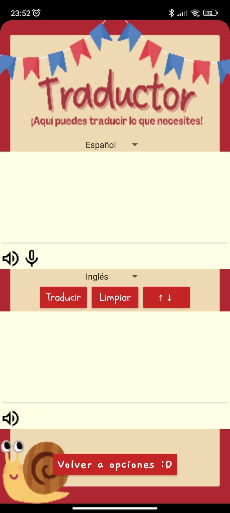
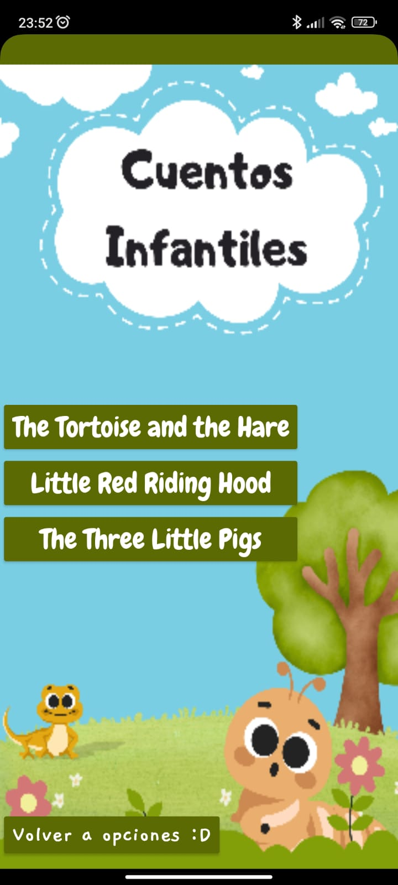

Nuestra aplicación fue diseñada pensando en los niños: es colorida, fácil de usar y totalmente intuitiva. Cada sección está organizada para que los pequeños
puedan explorar, jugar y aprender sin dificultad. A continuación, te mostramos cómo luce la interfaz de nuestra app. Desde juegos divertidos hasta cuentos y
videos educativos, todo está al alcance de un solo clic.
¡Aprender inglés nunca fue tan visual, claro y entretenido!

>Pantalla de inicio: un mundo amigable desde el primer clic
Así da la bienvenida nuestra app: con un diseño colorido, amigable y lleno de ternura.
El personaje principal, un simpático erizo, invita a los niños a comenzar su aventura en el mundo del inglés con solo tocar el botón ¡Vamos!. Todo está pensado para que los pequeños se sientan cómodos y emocionados por aprender desde el primer momento.

>Menú principal: fácil, claro y pensado para niños
El menú de nuestra app es muy sencillo e intuitivo, ideal para que los niños de 7 a 10 años puedan moverse por la aplicación sin dificultad.
Con solo unos íconos y palabras simples, pueden acceder rápidamente a:
🏠 Inicio: La pantalla principal donde comienza la aventura.
💖 Introducción: Un espacio donde se resume el propósito que tiene está aplicación.
💬 Comentarios: Un espacio donde los niños (o padres) pueden dejar sus opiniones mediante un correo electrónico.

>Un menú divertido para elegir cómo aprender
En esta pantalla, los niños podrán decidir cómo quieren aprender hoy, eligiendo entre cuatro opciones llenas de color y aprendizaje:
🎮 Juegos: Actividades interactivas para aprender jugando.
📺 Videos: Contenido audiovisual adaptado a su edad para reforzar el idioma de forma entretenida.
🌍 Traductor: Una herramienta sencilla para explorar nuevas palabras en inglés.
📖 Historias para leer: Cuentos cortos con vocabulario básico para practicar la lectura.
Además, con solo un toque, pueden volver al inicio fácilmente.
Este diseño está pensado para que los niños se sientan libres, motivados y seguros al aprender, ¡como si estuvieran eligiendo su aventura del día!
>Let’s Play! – ¡Aprender nunca fue tan divertido!
En esta sección, los niños podrán aprender inglés a través de divertidos juegos interactivos que estimulan distintas habilidades del idioma. Pueden elegir entre:
🔊 Adivinar por sonido: Escuchan un sonido y deben relacionarlo con la palabra correcta. Ideal para desarrollar la comprensión auditiva.
🧠 Vocabulario: Juegos para aprender nuevas palabras de forma visual y dinámica.
📚 Gramática: Actividades lúdicas que ayudan a entender reglas básicas del idioma sin hacerlo pesado.
🧩 Ordenar: Ejercicios para formar oraciones o secuencias correctamente, desarrollando lógica y estructura gramatical.
Y si desean volver a explorar otras opciones, ¡solo deben tocar el botón "Volver a opciones :D"!
Cada juego está diseñado para ser intuitivo, corto y con refuerzos positivos, ¡perfecto para mantener la atención y el entusiasmo de los pequeños!

>Videos para aprender - ¡Aprender visualmente siempre es la mejor opción para los más pequeños!
En está pantalla, los niños podrán visualizar videos online en el que aprenderán de manera fácil y divertida. Se encuentran dos videos interactivos
los cuales son:
🍓 Frutas en inglés: En este video ayudarán a los niños a aprenderse las frutas en inglés de una forma más sencilla y sobre todo de una manera en la que les gustará aprender.
🦋 Insectos en inglés: En este video podrán aprender de una manera fácil los nombres de los insectos.

>Traductor – ¡Explora el idioma sin límites!
Esta herramienta permite a los niños traducir palabras o frases entre Español e Inglés, facilitando su comprensión en tiempo real. Con una interfaz sencilla y amigable, pueden:
🗣 Hablar o escribir lo que quieran traducir, usando el micrófono o el teclado.
🔄 Invertir el idioma con solo un botón, fomentando la práctica en ambas direcciones.
🔊 Escuchar la pronunciación correcta de cada palabra o frase.
🧹 Limpiar fácilmente el texto para comenzar una nueva traducción.
Esta función no solo sirve como apoyo escolar, sino que también motiva la curiosidad lingüística y la independencia al aprender.

>Historias para leer - ¡Aprenderte tus cuentos favoritos en otro idioma es más divertido!
Esta sección les ayudará a los niños a aprender de forma más fácil cómo tener una conversación cotidiana en inglés mediante el uso de palabras básicas y comunes que se utilizan.
También podrán agudizar su oído y poder identificar la fonética, ya que cuenta con un reproductor de audio, por lo que mientras leen, también podrán escuchar el audio reproduciéndose.
Los cuentos son los siguientes:
"The Tortoise and the Hare" o "La Tortuga y la Liebre"